05. Cluster Maintenance
📑 Table of Contents
- 1. Node Maintenance & OS Upgrades
- Node Failure & Pod Eviction Timeout
- Drain, Cordon, and Uncordon
- 2. Kubernetes Software Versions & Skew Policy
- Version Anatomy
- Component Version Skew Rules
- Support Lifecycle
- 3. Step-by-Step Kubeadm Cluster Upgrade Playbook
- Phase 1: Upgrade the Control Plane Node
- Phase 2: Upgrade Worker Nodes (One by One)
- 4. Kubeadm Certificate Management & Renewal
- Check Expiration
- Renew Certificates
- Post-Renewal Verification
- 5. ETCD Backup and Snapshot Restore
- Backup Strategies: Declarative vs. etcd Snapshot
- Creating an ETCD Snapshot
- Restoring an ETCD Snapshot (Static Pod Architecture)
- TLS Authentication Flags for etcdctl
1. Node Maintenance & OS Upgrades
Node Failure & Pod Eviction Timeout
When a node becomes unreachable or shuts down:
- Pod Eviction Timeout (default: 5m): Configured on kube-controller-manager via --pod-eviction-timeout=5m0s.
- If the node recovers within 5 minutes, pods resume without recreation.
- If down for > 5 minutes, the node is marked NotReady, and its pods are terminated and rescheduled on healthy nodes (if managed by a ReplicaSet/Deployment). Bare pods are not recreated.
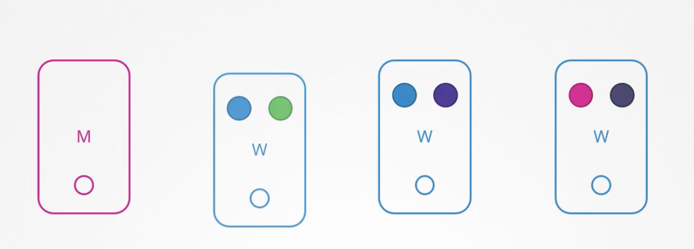
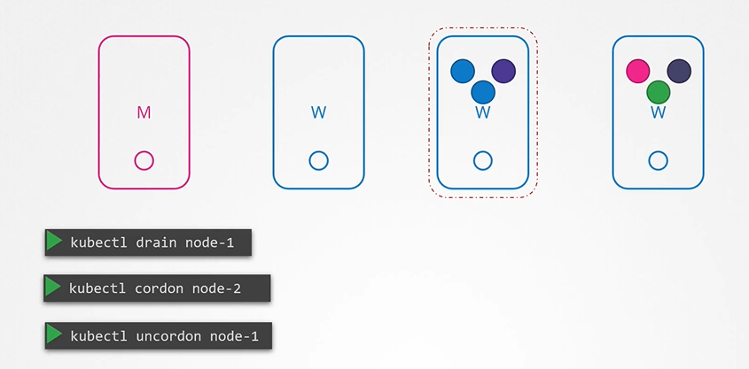
Drain, Cordon, and Uncordon
To safely take a node offline for maintenance (kernel patching, hardware upgrade):
| Command | Action | Impact on Existing Pods | Impact on New Pods |
|---|---|---|---|
kubectl cordon <node> |
Marks node unschedulable | No change (keeps running) | Blocks new pods |
kubectl drain <node> |
Cordons + evicts pods | Evicts graceful termination | Blocks new pods |
kubectl uncordon <node> |
Marks node schedulable | No auto fallback of old pods | Allows new pods |
Drain Commands:
# 1. Drain node (safely evicts workloads to other nodes)
kubectl drain node01 --ignore-daemonsets
# 2. If node hosts pods with local emptyDir storage, force eviction:
kubectl drain node01 --ignore-daemonsets --delete-emptydir-data --force
# 3. Perform maintenance / reboot node...
# 4. Return node to scheduling pool:
kubectl uncordon node01
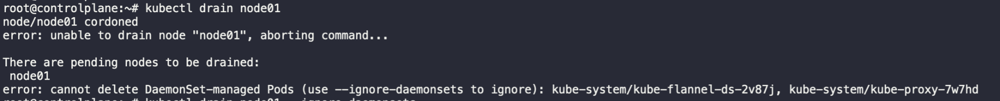
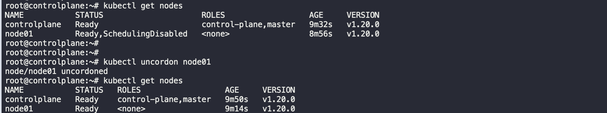
2. Kubernetes Software Versions & Skew Policy
Version Anatomy
Kubernetes adheres to Semantic Versioning (vMAJOR.MINOR.PATCH, e.g., v1.31.2):
- MAJOR (1): Core API changes.
- MINOR (31): Feature additions, API enhancements (released ~3 times per year).
- PATCH (2): Bug fixes and security patches.
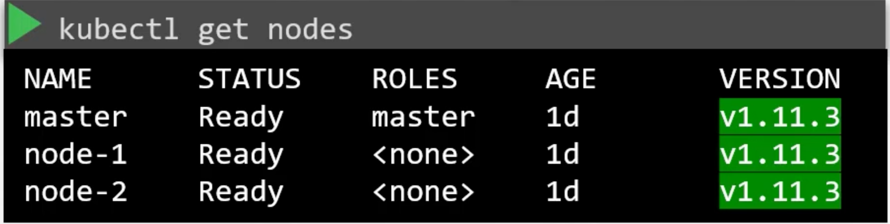
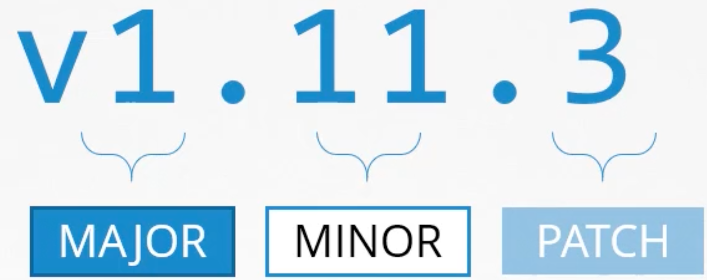
Component Version Skew Rules
kube-apiserver is the primary hub of the control plane. No component can be at a higher minor version than the API server:
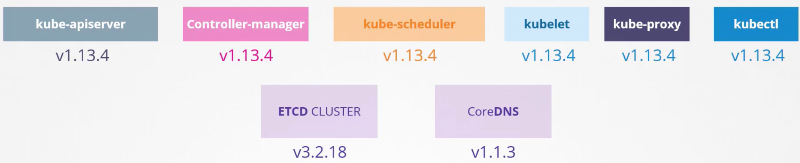
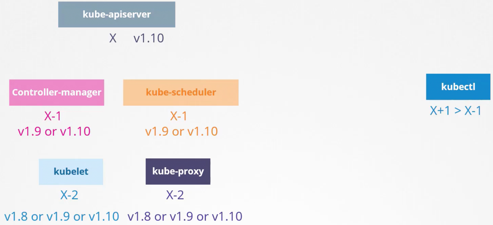
kube-apiserver: Version Xkube-scheduler&kube-controller-manager: Permitted at X or X - 1kubelet&kube-proxy: Permitted at X, X - 1, or X - 2kubectl: Permitted at X + 1, X, or X - 1
Support Lifecycle
- Kubernetes officially maintains the three most recent minor versions (e.g., 1.31, 1.30, 1.29).
- Never skip minor versions during an upgrade (e.g., to go from
1.29to1.31, upgrade1.29➔1.30➔1.31).
3. Step-by-Step Kubeadm Cluster Upgrade Playbook
Upgrade Strategy
- Upgrade the primary Control Plane node.
- Upgrade secondary Control Plane nodes (in HA clusters).
- Upgrade Worker nodes sequentially (one-by-one) to maintain application availability.
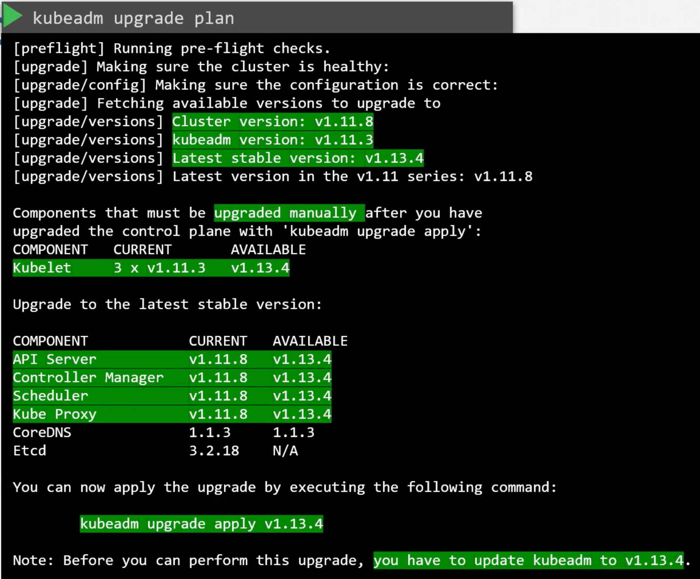
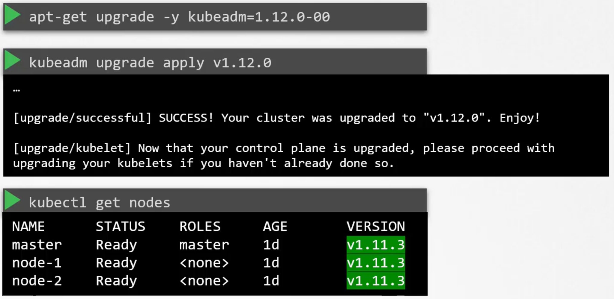
Phase 1: Upgrade the Control Plane Node
-
Drain the Control Plane node:
bash kubectl drain controlplane --ignore-daemonsets -
Upgrade the
kubeadmbinary: ```bash sudo apt-mark unhold kubeadm sudo apt-get update && sudo apt-get install -y kubeadm=1.31.0-1.1 sudo apt-mark hold kubeadm
kubeadm version ```
- Plan and apply the upgrade: ```bash # View upgrade plan and verify component compatibility: sudo kubeadm upgrade plan
# Apply control plane upgrade (upgrades static pod manifests): sudo kubeadm upgrade apply v1.31.0 -y ```
- Upgrade
kubeletandkubectlon Control Plane: ```bash sudo apt-mark unhold kubelet kubectl sudo apt-get install -y kubelet=1.31.0-1.1 kubectl=1.31.0-1.1 sudo apt-mark hold kubelet kubectl
sudo systemctl daemon-reload sudo systemctl restart kubelet ```
- Uncordon the Control Plane node:
bash kubectl uncordon controlplane
Phase 2: Upgrade Worker Nodes (One by One)
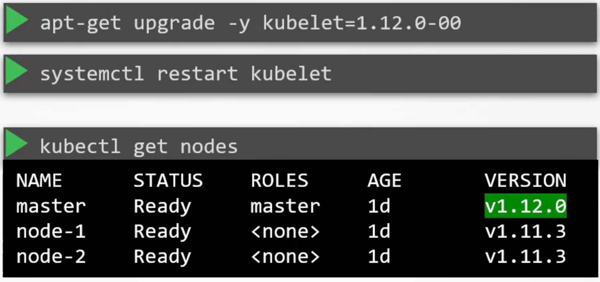
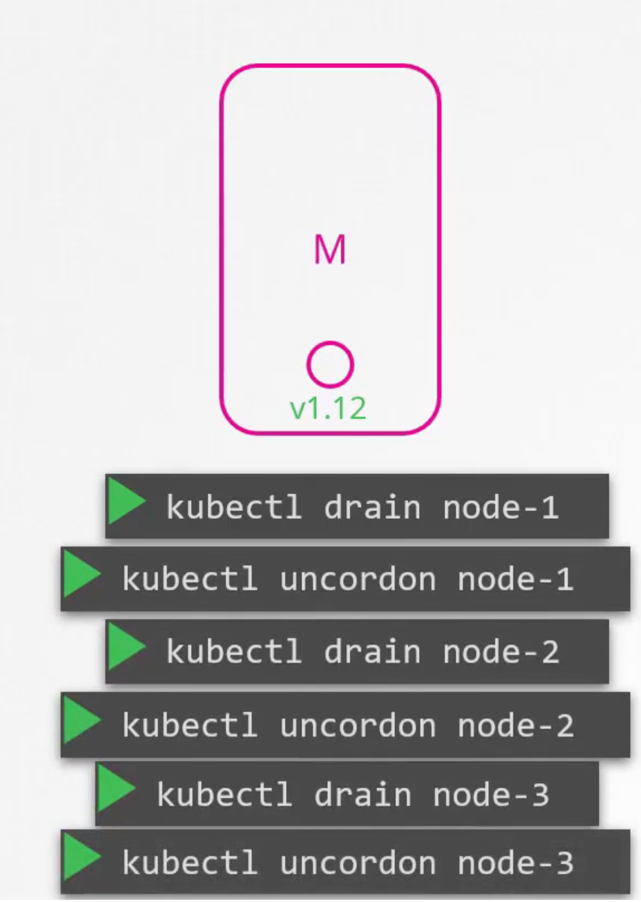
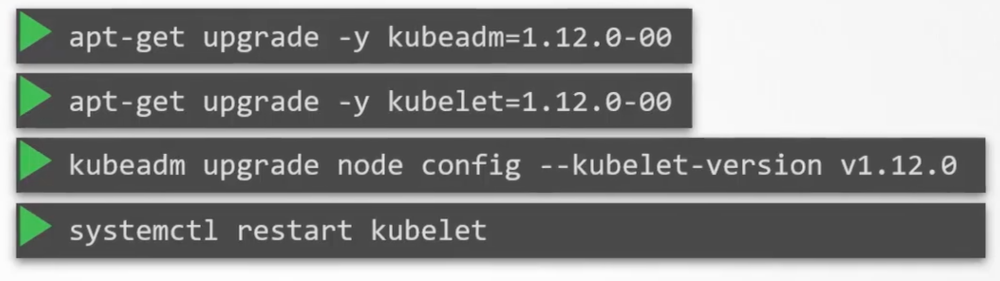
-
Drain the Worker node from the Control Plane:
bash kubectl drain node01 --ignore-daemonsets --delete-emptydir-data --force -
Log into the Worker node:
bash ssh node01 -
Upgrade
kubeadmon Worker:bash sudo apt-mark unhold kubeadm sudo apt-get update && sudo apt-get install -y kubeadm=1.31.0-1.1 sudo apt-mark hold kubeadm -
Upgrade local node configuration:
bash sudo kubeadm upgrade node -
Upgrade
kubeletandkubectlon Worker: ```bash sudo apt-mark unhold kubelet kubectl sudo apt-get install -y kubelet=1.31.0-1.1 kubectl=1.31.0-1.1 sudo apt-mark hold kubelet kubectl
sudo systemctl daemon-reload sudo systemctl restart kubelet ```
-
Exit Worker and Uncordon from Control Plane:
bash exit kubectl uncordon node01 -
Verify node status:
bash kubectl get nodes -o wide
4. Kubeadm Certificate Management & Renewal
Kubeadm-generated TLS certificates expire after 1 year by default.
Check Expiration
kubeadm certs check-expiration
Displays expiration date, remaining days, and authority for apiserver, etcd, front-proxy, etc.
Renew Certificates
# Renew all certificates simultaneously:
sudo kubeadm certs renew all
# Or renew specific component:
sudo kubeadm certs renew apiserver
Post-Renewal Verification
# Restart kubelet to reload static pod certificates:
sudo systemctl restart kubelet
# Refresh admin kubeconfig credentials for root user:
sudo cp -i /etc/kubernetes/admin.conf $HOME/.kube/config
sudo chown $(id -u):$(id -g) $HOME/.kube/config
5. ETCD Backup and Snapshot Restore
Backup Strategies: Declarative vs. etcd Snapshot
-
Resource Manifest Backup (Declarative): - Store all YAML configs in Git (Infrastructure as Code). - Alternatively, query the API server using CLI / tools like Velero:
bash kubectl get all --all-namespaces -o yaml > cluster-backup.yaml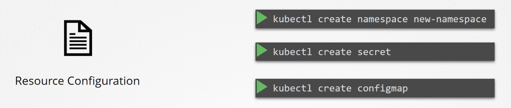
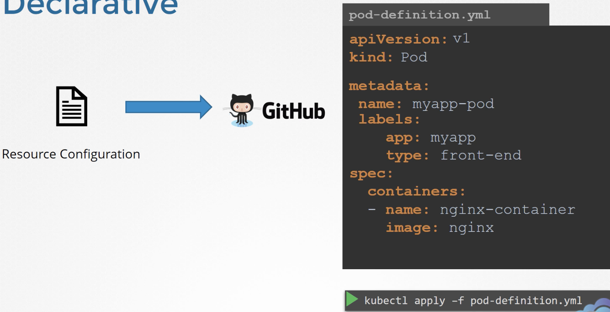
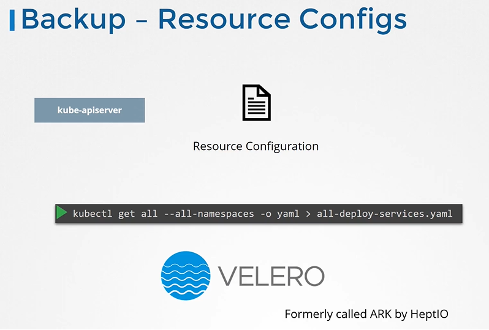
-
Database Snapshot (State Store): - Direct backup of
/var/lib/etcdor online snapshot usingetcdctl.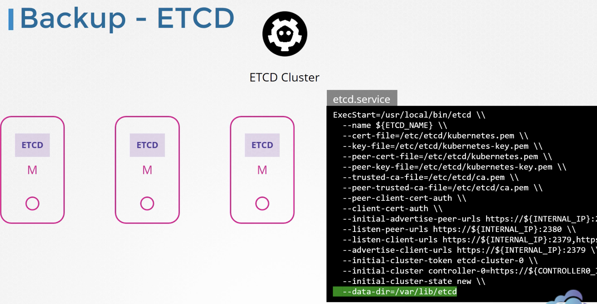
Creating an ETCD Snapshot
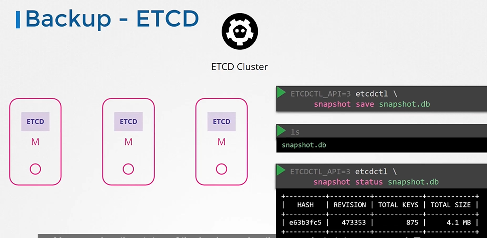
[!TIP] Locating ETCD Certificates & Endpoints on the Control Plane: If you don't know the exact certificate paths or listen URLs during the exam, inspect the static pod manifest or pod description: ```bash
Option 1: Inspect the manifest directly
cat /etc/kubernetes/manifests/etcd.yaml | grep -E "cert|key|listen-client-urls"
Option 2: Describe the running etcd pod
kubectl describe pod etcd-controlplane -n kube-system
`` Typical locations: - CA Cert:--cacert=/etc/kubernetes/pki/etcd/ca.crt- Server Cert:--cert=/etc/kubernetes/pki/etcd/server.crt- Server Key:--key=/etc/kubernetes/pki/etcd/server.key- Endpoints:https://127.0.0.1:2379(peer port:2380`)
Always use ETCDCTL_API=3 and supply TLS certificates:
ETCDCTL_API=3 etcdctl \
--endpoints=https://127.0.0.1:2379 \
--cacert=/etc/kubernetes/pki/etcd/ca.crt \
--cert=/etc/kubernetes/pki/etcd/server.crt \
--key=/etc/kubernetes/pki/etcd/server.key \
snapshot save /opt/snapshot-pre-boot.db
Verify snapshot health and size:
ETCDCTL_API=3 etcdctl snapshot status /opt/snapshot-pre-boot.db --write-out=table
Restoring an ETCD Snapshot (Static Pod Architecture)
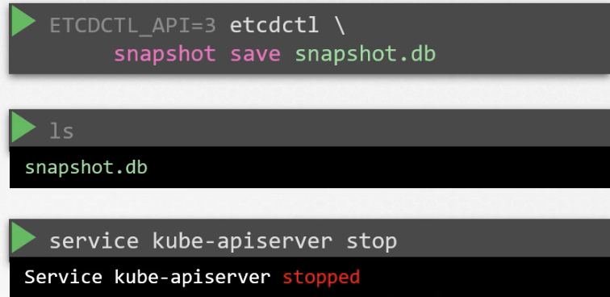
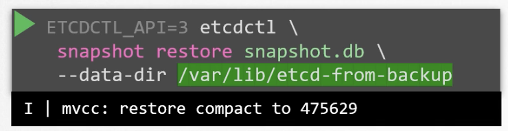
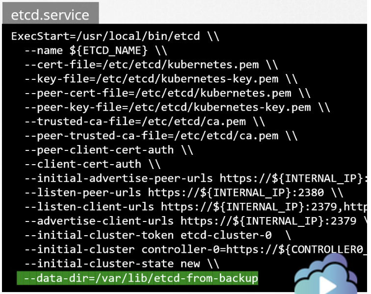
-
Restore snapshot to a NEW host directory:
bash ETCDCTL_API=3 etcdctl snapshot restore /opt/snapshot-pre-boot.db \ --data-dir=/var/lib/etcd-from-backup -
Update the Static Pod manifest (
/etc/kubernetes/manifests/etcd.yaml): - Update thehostPathforetcd-datavolume from/var/lib/etcdto the new path/var/lib/etcd-from-backup: ```yaml volumes:- hostPath: path: /var/lib/etcd-from-backup type: DirectoryOrCreate name: etcd-data ```
-
Verify Static Pod Recreation: - Kubelet detects manifest edits automatically and recreates the etcd container. ```bash # Watch etcd container reload: sudo crictl ps | grep etcd
# Verify cluster API responds: kubectl get pods -n kube-system ```
TLS Authentication Flags for etcdctl
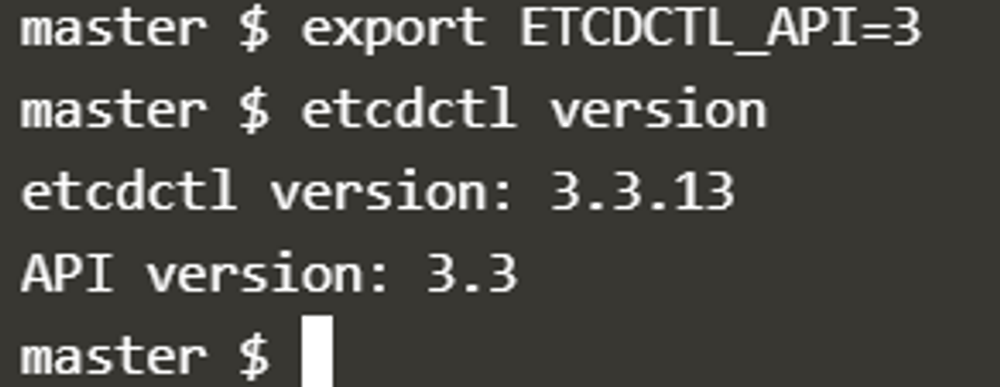
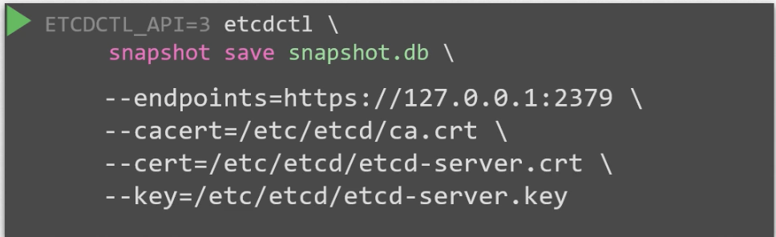
export ETCDCTL_API=3
# Essential flags:
# --endpoints=https://127.0.0.1:2379 -> etcd listen address
# --cacert=/etc/kubernetes/pki/etcd/ca.crt
# --cert=/etc/kubernetes/pki/etcd/server.crt
# --key=/etc/kubernetes/pki/etcd/server.key